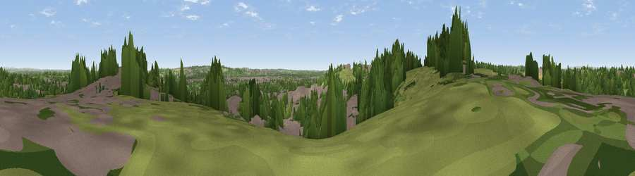

Viewpoint near Anslow
#39247 in England · top 77% of its area beats it · near AnslowThe view, rendered

A 360° render of this exact spot computed from the terrain model, tree cover and land cover — summer colours, afternoon light, calibrated against photographs of famous viewpoints. Real trees, hedges and buildings will differ in detail.
The panorama
Grey silhouette: terrain skyline in each direction (720 bearings, Earth curvature and refraction included). Dashed green: skyline with trees (+15 m) and buildings (+8 m) as obstacles. Blue strip: how far the ground is visible on each bearing.
Where the view opens
Wedge length = distance to the farthest visible ground on that bearing (vegetation-aware). Rings at 10, 25 and 50 km.
What fills the view
37% built-up · 34% woodland · 23% grassland · 6% cropland
Angular shares of the visible panorama (visual magnitude), not map area. Landscape diversity 0.54 (0–1 Shannon).
Key numbers
More beautiful places nearby
The staircase of upgrades: each row has a higher view potential than everything closer. Driving times are estimates from straight-line distance, calibrated against real road routing — check an actual route before setting out.
| Place | Direction | Drive | Score |
|---|---|---|---|
| Viewpoint near Anslow | SSW · 1 km | ~3 min | 43.9 |
| Viewpoint near Tatenhill | SW · 3 km | ~8 min | 46.8 |
| Viewpoint near Burton upon Trent | SE · 4 km | ~9 min | 50.6 |
| Viewpoint near Newton Solney | E · 4 km | ~9 min | 55.0 |
| Viewpoint near Hartshorne | ESE · 11 km | ~21 min | 59.5 |
| Viewpoint near Little Eaton | NE · 22 km | ~37 min | 64.3 |
| Viewpoint near Whitwick | ESE · 23 km | ~38 min | 71.2 |
| Viewpoint near Wootton | NNW · 25 km | ~40 min | 74.4 |
52.82316, -1.65679 · source: screening · position refined by local search. Computed location — check access rights before visiting.